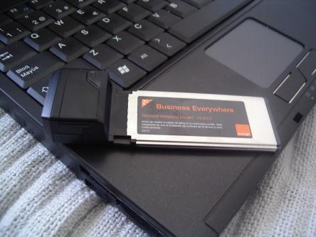
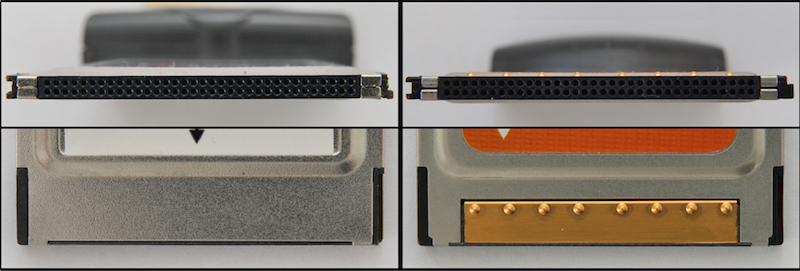
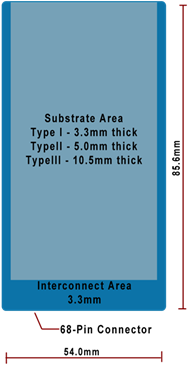
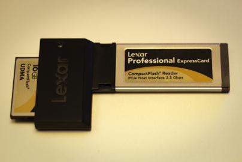
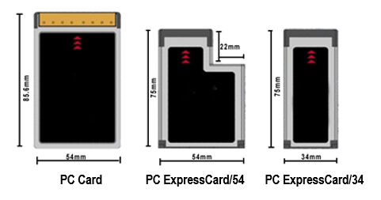
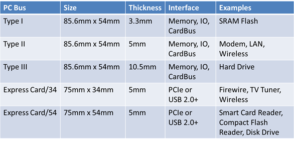

PCH17-Installing and Configuring Laptop Hardware <<
Previous Next >> PCH17-Notebook Features
Expansion-
The first method that was developed to expand a laptop’s capabilities was the Personal Computer Memory Card International Association (PCMCIA) card. These cards were inserted into an expansion slot on the slide of the laptop and fit almost completely inside the casing of the machine. These cards originally came as PC cards (16-bit or 32-bit) or CardBus (32-bit) cards that fit into the associated slot. These cards were hot-swappable, meaning that the card could be ejected or inserted while the computer was still powered on. The idea of these cards was to provide a standard expansion port, similar to a PCI expansion slot on a traditional desktop computer. These cards had 68 pins in a two-row connector. These cards came in three types: type I, type II, and type III. Type I was used to provide additional memory and storage capabilities, but is now obsolete. Type II was used to provide additional input/output connections (like FireWire or USB), a network interface card, modem, or other such external devices/connectivity. Type II cards were only 5 mm thick, so they usually had to include a dongle to convert a flat proprietary connection to a standard connection like FireWire, RJ-45, or RJ-11. Type III was used as an upgraded version of the type II device and was thicker, reaching 10.5 mm in size, reducing or eliminating the need for a dongle. Cardbus, an improvement to the PC card, was a full 32-bit expansion card system and operated very similarly to the PC card. The CardBus was easily identified by looking at the edge of the expansion card, since it contained a golden edge where the connectors were. The card in the first image below has a black edge, and is a PC card, not a CardBus.

PC card. Photo used under CC-BY-NC-ND license from Javier Leiva.

End-view of a PC card (left) and a CardBus (right). Photo used under CC-BY-SA license from Wikimedia Commons.

Type I, type II, and type III PCMCIA cards. Figure used under CC-BY license from National Information, Security, Geospatial Technologies Consortium.
ExpressCard is a type of laptop expansion card that replaced PC cards and PCMCIA cards. Internally, the ExpressCard slots support both PCI Express and USB 2.0 connectivity and each card uses whichever standard to connect to the motherboard that the card designer believes is most appropriate for the card’s intended use. ExpressCard is hot-swappable, just like PC cards and PCMCIA cards. ExpressCard supports two form factors: the ExpressCard 34 (which is 34 mm wide) and ExpressCard 54 (which is 54 mm wide and shaped like an L). Regardless of which ExpressCard you are using, the connector inside the laptop is the same on both versions (34 mm), but the exterior portion can be either 34 mm or 54 mm. The ExpressCard slots are slightly shorter in length than a PCMCIA card, but are the same thickness at 5 mm. The ExpressCard 34 can fit in either an ExpressCard 34 slot or an ExpressCard 54 slot. The ExpressCard 54 can only fit into an ExpressCard 54 slot, though. As of 2016, it appears that all manufacturers have eliminated expansion cards in favor of eSata, USB, and Thunderbolt2 ports for laptop expandability. ExpressCards are still available in aftermarket sales, but the technology is soon to be deprecated as PCMCIA is now.

ExpressCard 34. Photo used under CC-BY-NC license from Jim.

PCMCIA and ExpressCard dimensions. Image used under CC-BY license from National Information, Security, Geospatial Technologies Consortium.

Laptop expansion slot technologies. Figure used under CC-BY license from National Information, Security, Geospatial Technologies Consortium.
Another way to provide expansion to your laptop is by using its USB ports. Expanding a laptop in this manner is the same as providing external devices to a desktop computer. As with desktop computers, manufacturers have consolidated expansion ports and card slots in favor of the faster and more universal USB and Thunderbolt expansion ports. Expanding a laptop in this manner is the same as providing external devices to a desktop computer. Usually, the biggest issue is that a laptop has many fewer USB ports than a desktop equivalent machine. Also, the laptop USB ports tend to not provide as much power for the devices connected. So, if you are using a device that requires more power, such as an external DVD drive or external hard drive, you should use a Y-cable that allows a single USB port from your device to connect to two USB ports on the laptop. One of these ports provides power and data, while the other port provides power only.
Some laptops, and especially netbooks, come with very limited internal storage space. Many laptops now come with an SD card or memory card expansion slot to provide the user with the ability to increase the storage space. This is rather common in netbooks that come with a small solid state device (SSD). Other laptops instead incorporate a multi-card reader to allow the user to read and write to numerous types of flash memory cards, like those used in digital cameras. Other laptops don’t provide this type of integrated reader. So ,if you need this capability, an external USB model can be used instead.
Thunderbolt is an interface that takes advantage of both the PCIe interface combined with the Mini DisplayPort connector resulting in being able to transfer both both video and audio, as well as data. The table below lists the versions and data rates of the Thunderbolt expansion port. Version 3 was released in December 2015 and uses a USB Type C connector.
| Version 1 |
10 Gb/s |
DisplayPort |
| Version 2 |
20 Gb/s |
DisplayPort |
| Version 3 |
40 Gb/s |
USB Type C |
Watch the following video to explore more about laptop expansion:
learn by doing-
True or False: The last type of expansion card is CardBus.
(T:Incorrect. ExpressCard was the last form factor made for laptops.
F:Correct. ExpressCard was the last form factor made for laptops.)
did I get this-
The latest type of laptop expansion that has replaced expansion cards is .
(USB and Thunderbolt:Correct. USB and Thunderbolt have replaced cards for laptop expandability.
ExpressCard:Incorrect. USB and Thunderbolt have replaced cards for laptop expandability.
CardBus:Incorrect. USB and Thunderbolt have replaced cards for laptop expandability.)
True or False: ExpressCards, PC cards, PCMCIA cards, and Thunderbolt expansion devices are all hot-swappable.
(T:Correct. All of these expansion devices are hot-swappable.
F:Incorrect. All of these expansion devices are hot-swappable.)
checkpoint-
Take a minute to stop and reflect on your progress for this learning objective.
Do you feel comfortable with this material and ready to move on?
(Y:Great! Feel free to continue working through the module.
N:No problem.)
PCH17-安裝和配置筆記本電腦硬件
擴張-
擴展筆記本電腦功能的第一種方法是國際個人計算機存儲卡協會（PCMCIA）卡。這些卡已插入筆記本電腦滑
軌上的擴展槽中，幾乎完全可以裝入計算機機箱內。這些卡最初是作為可插入相關插槽的PC卡（16位或32位）
或CardBus（32位）卡來的。這些卡是可熱插拔的，這意味著可以在計算機仍打開電源時彈出或插入卡。這些
卡的想法是提供一個標準擴展端口，類似於傳統台式計算機上的PCI擴展插槽。這些卡在兩行連接器中有68個
引腳。這些卡分為三種類型：I型，II型和III型。類型I用於提供其他內存和存儲功能，但現在已過時。類型
II用於提供其他輸入/輸出連接（如FireWire或USB），網絡接口卡，調製解調器或其他此類外部設備/連接
性。 II型卡只有5毫米厚，因此它們通常必須包含一個加密狗才能將扁平的專有連接轉換為FireWire，RJ-45
或RJ-11等標準連接。 III型用作II型設備的升級版，它更厚，達到10.5毫米，從而減少或消除了對加密狗
的需求。 Cardbus是PC卡的改進，它是一個完整的32位擴展卡系統，其操作與PC卡非常相似。通過查看擴展
卡的邊緣可以輕鬆識別CardBus，因為它包含連接器所在的金色邊緣。下圖第一張圖中的卡具有黑色邊緣，是
PC卡，而不是CardBus。
PC卡。圖片由Javier Leiva根據CC-BY-NC-ND許可使用。
PC卡（左）和CardBus（右）的端視圖。根據Wikimedia Commons的CC-BY-SA許可使用的照片。
I型，II型和III型PCMCIA卡。根據國家信息，安全，地理空間技術聯盟的CC-BY許可使用的圖。
ExpressCard是筆記本電腦擴展卡的一種，代替PC卡和PCMCIA卡。在內部，ExpressCard插槽同時支持
PCI Express和USB 2.0連接，並且每個卡都使用卡設計者認為最適合卡預期用途的任何標準連接到主板。
ExpressCard可熱插拔，就像PC卡和PCMCIA卡一樣。 ExpressCard支持兩種尺寸：ExpressCard 34
（寬度為34毫米）和ExpressCard 54（寬度為54毫米，形狀像L形）。無論使用哪種ExpressCard，筆記本
電腦內部的連接器在兩個版本上都是相同的（34 mm），但是外部可以是34 mm或54 mm。 ExpressCard插槽
的長度略短於PCMCIA卡，但在5毫米處的厚度相同。 ExpressCard 34可以安裝在ExpressCard 34插槽或
ExpressCard 54插槽中。但是，ExpressCard 54只能裝入ExpressCard 54插槽中。截至2016年，似乎所
有製造商都已經淘汰了擴展卡，而採用eSata，USB和Thunderbolt2端口來實現筆記本電腦的可擴展性。
ExpressCard仍可在售後市場中購買，但是隨著PCMCIA的出現，該技術很快將被棄用。
ExpressCard34。Jim根據CC-BY-NC許可使用的照片。
PCMCIA和ExpressCard尺寸。根據國家信息，安全，地理空間技術聯盟的CC-BY許可使用的圖像。
筆記本電腦擴展插槽技術。根據國家信息，安全，地理空間技術聯盟的CC-BY許可使用的圖。
擴展筆記本電腦的另一種方法是使用其USB端口。以這種方式擴展筆記本電腦與為台式計算機提供外部設備相同。與台式計算機一樣，製造商整合了擴展端口和卡插槽，以支持更快，更通用的USB和Thunderbolt擴展端口。以這種方式擴展筆記本電腦與為台式計算機提供外部設備相同。通常，最大的問題是筆記本電腦的USB端口要少於台式機。同樣，筆記本電腦的USB端口往往無法為連接的設備提供足夠的電源。因此，如果使用的設備需要更大的功率，例如外部DVD驅動器或外部硬盤驅動器，則應使用Y型電纜，該電纜允許設備中的單個USB端口連接到筆記本電腦上的兩個USB端口。這些端口中的一個提供電源和數據，而另一個端口僅提供電源。
一些筆記本電腦，尤其是上網本，內部存儲空間非常有限。現在，許多筆記本電腦都帶有SD卡或存儲卡擴展槽，以使用戶能夠增加存儲空間。這在帶有小型固態設備（SSD）的上網本中非常普遍。相反，其他便攜式計算機包含多卡讀取器，以允許用戶讀寫多種類型的閃存卡，例如數碼相機中使用的閃存卡。其他筆記本電腦不提供此類集成閱讀器。因此，如果需要此功能，則可以使用外部USB型號。
Thunderbolt是一種接口，該接口同時利用了PCIe接口和Mini DisplayPort連接器，從而能夠同時傳輸視頻和音頻以及數據。下表列出了Thunderbolt擴展端口的版本和數據速率。第3版於2015年12月發布，並使用USB C型連接器。
| 版本1 |
10 Gb/s |
顯示端口 |
| 版本2 |
20 Gb/s |
顯示端口 |
| 版本3 |
40 Gb/s |
USB C型 |
觀看以下視頻，以探索有關筆記本電腦擴展的更多信息：
通過實踐學習-
是非題：擴展卡的最後一種類型是CardBus。
正確
錯誤
(正確:不正確。ExpressCard是筆記本電腦的最後一個外形尺寸。
錯誤:正確。 ExpressCard是筆記本電腦的最後一個外形尺寸。)
The latest type of laptop expansion that has replaced expansion cards is .
(USB和Thunderbolt:正確。 USB和Thunderbolt取代了可擴展筆記本電腦的卡。
CardBus:不正確。USB和Thunderbolt取代了可擴展筆記本電腦的卡。
ExpressCard:不正確。USB和Thunderbolt取代了可擴展筆記本電腦的卡。)
是非題：ExpressCard，PC卡，PCMCIA卡和Thunderbolt擴展設備均可熱插拔。
正確
錯誤
(正確:正確。所有這些擴展設備都是可熱交換的。
錯誤:不正確。所有這些擴展設備都是可熱交換的。)
檢查站-
花一點時間停下來，為這個學習目標反思自己的進步。
您對這種材料感到滿意並準備繼續前進嗎？
是的，我對實現這一學習目標的能力充滿信心。
不，我想了解有關此學習目標的更多材料。
(是:大！隨時繼續學習該模塊。
不:沒問題。)
PCH17-Installing and Configuring Laptop Hardware <<
Previous Next >> PCH17-Notebook Features